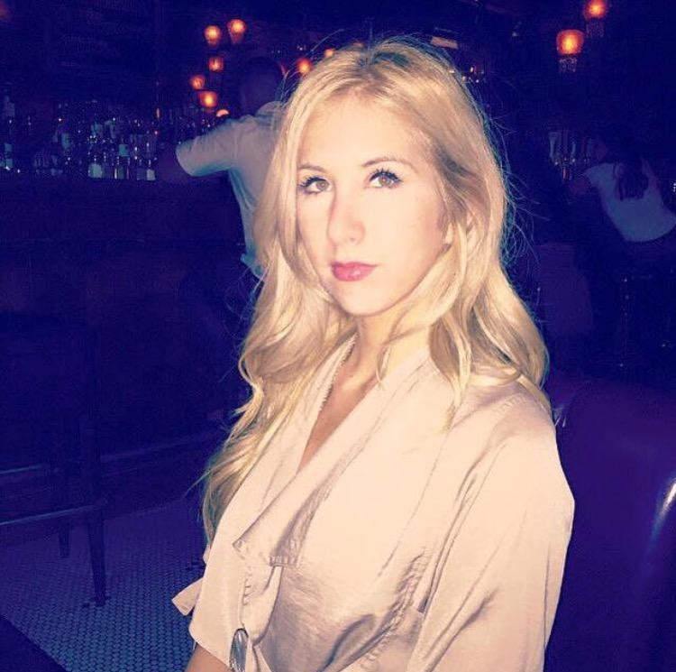

Connect with Me


About Me
"The same boiling water that softens the potato hardens the egg. It's about what you're made of, not the circumstances."
Yes, that was a Pinterest quote you just digested. That aside, it also means that no matter who you are you make yourself, and I'm a firm believer in that. I am thrilled to be learning something as awesome and challenging as web development, and I cannot wait to take my career in this direction. Quick facts: I love to go on at least a few trips a year, it keeps me refreshed. I took several years of film photography and I appreciate the care it takes to hand-develop prints. And lastly, I once kept a pet fish alive for two years, and I just think that's a great story. Nice to meet you!